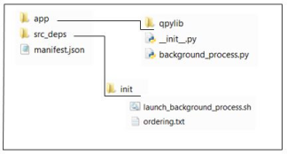

The OAuth bearer token is an access token that allows an app to access specific QRadar
resources.
A QRadar OAuth app can make QRadar REST API calls by using an OAuth bearer token.
The following diagram shows the folder and file structure for the OAuth app that is used in the
example.Figure 1. OAuth bearer token app

The following example shows how an app that is a background service gets and uses the bearer
token for authorization to make QRadar REST API calls:
The manifest.json file includes an authentication entry to identify and
configure the app as an OAuth app, and instructs the Flask web server not to load.
{
"name": "OAuth background process",
"version": "1.0",
"description": "Simple background process app that calls QRadar REST API using OAuth",
"uuid": "a7e67388-95e1-436e-bdbd-df9c53230728",
"load_flask": "false", "authentication": {
"oauth2": {
"authorisation_flow": "CLIENT_CREDENTIALS",
"requested_capabilities": ["ADMIN"]
}
}
}
The src_deps/init/launch_background_process.sh script is run.
The src_deps/init/launch_background_process.sh script calls the
app/background_process.py Python
module.
#!/usr/bin/python
from qpylib import qpylib
from qpylib import oauth_qpylib
import requests
import json
import time
qpylib.create_log()
rest_url = 'https://' + qpylib.get_console_address() + '/api/ariel/databases'
request_headers = {}
oauth_qpylib.add_oauth_header(request_headers)
while True:
time.sleep(30)
try:
response = requests.get(rest_url, headers=request_headers, verify=False)
qpylib.log('response=' + json.dumps(response.json()))
except Exception as e:
qpylib.log('Error: ' + str(e))
The
background_process.py module runs a continuous loop where it calls a QRadar
REST API endpoint, and then logs the result.
How the OAuth bearer token is retrieved
The add_oauth_header function takes a Python requests-ready headers object and
adds an Authorization header that contains the application’s OAuth bearer token.
To retrieve the token, add_oauth_header sends a GET token request to the QRadar
OAuth service, which runs on a specific port at
https://qoauth.service.consul.
The GET token request looks for the following details:
The QRadar OAuth service port
The service port is identified by a call to the Python module
service_port_locator.py, which is in the root directory of the Docker
container.
Here's an example of the call to the Python
module:
def get_qoauth_port():
p = subprocess.Popen(['/service_port_locator.py',
'qoauth.service.consul'], stdout=subprocess.PIPE)
return str(p.communicate()[0]).strip()
The application's OAuth client ID and client secret.
The client ID and secret are available
to the Python code as the CLIENT_ID and CLIENT_SECRET
environment variables.
The following URL is an example of the GET token request to the OAuth service: